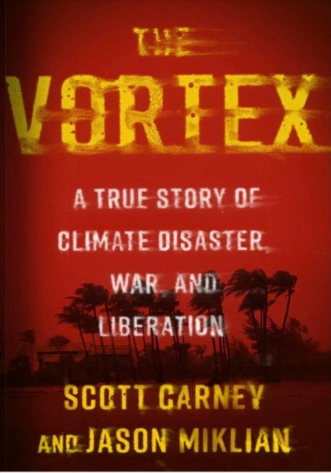

scottcarney.com/the-vortex · same address as today
Book · 2022 · with Jason Miklian
The Vortex
A True Story of History's Deadliest Storm, an Unspeakable War, and Liberation
In 1970 the Great Bhola Cyclone killed 500,000 people and set off a chain reaction of genocide and war that brought the Cold War powers to the brink.
About the book
In November 1970, a storm set a collision course with the most densely populated coastline on Earth. Over the course of just a few hours, the Great Bhola Cyclone would kill 500,000 people and begin a chain reaction of turmoil, genocide, and war. The Vortex is the dramatic story of how that storm sparked a country to revolution—and how those events brought the cold war powers to the brink of nuclear war.
Bhola made landfall during a fragile time, when Pakistan was on the brink of a historic election. The fallout ignited a conflagration of political intrigue, corruption, violence, idealism, and bravery that played out in the lives of tens of millions of Bangladeshis. Authors Scott Carney and Jason Miklian take us deep into the story of the cyclone and its aftermath, told through the eyes of the men and women who lived through it, including the infamous president of Pakistan, General Yahya Khan, and his close friend Richard Nixon; American expats Jon and Candy Rhode; soccer star-turned-soldier Hafiz Uddin Ahmad; and a young Bengali revolutionary, Mohammed Hai.
Thrillingly paced and written with incredible detail, The Vortex is not just a story about the painful birth of a new nation but also a universal tale of resilience and liberation in the face of climate emergency that affects every single person on the planet.
 What Doesn't Kill Us
What Doesn't Kill Us The Wedge
The Wedge The Enlightenment Trap
The Enlightenment Trap Dream
Dream The Red Market
The Red Market